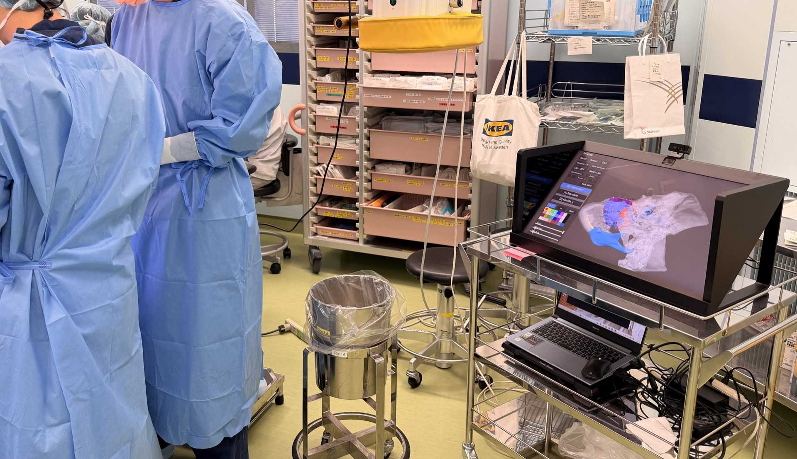
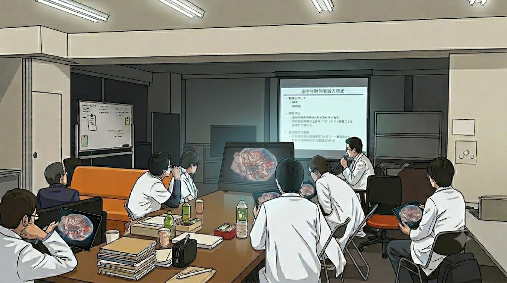
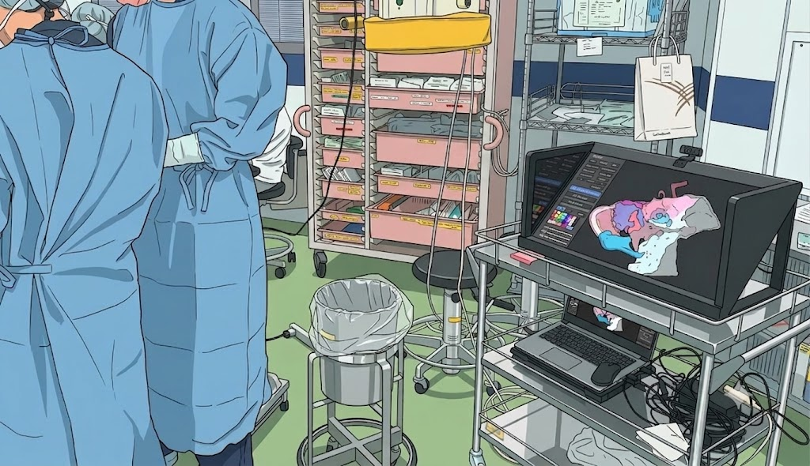
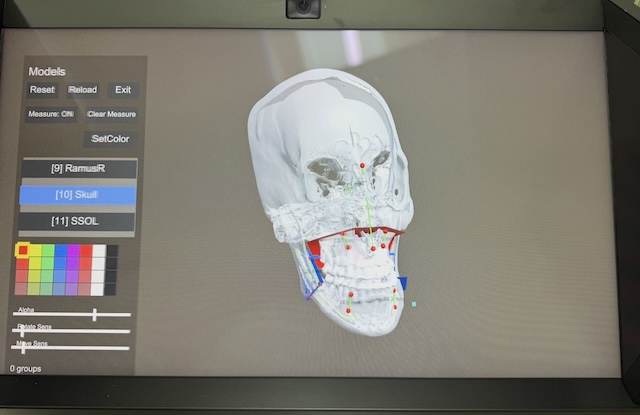
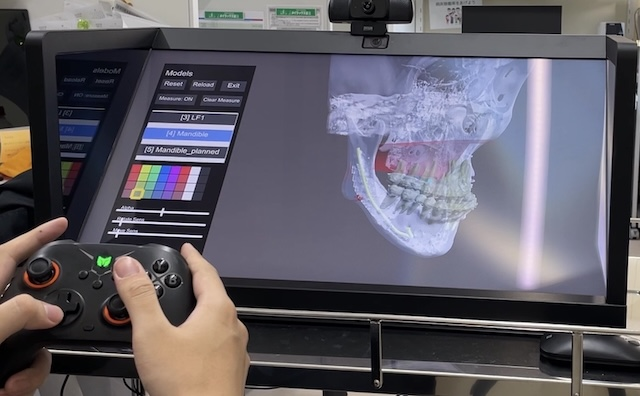
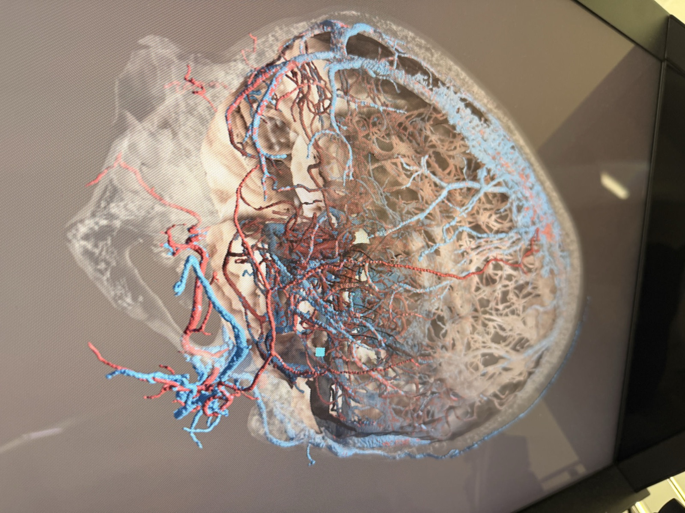
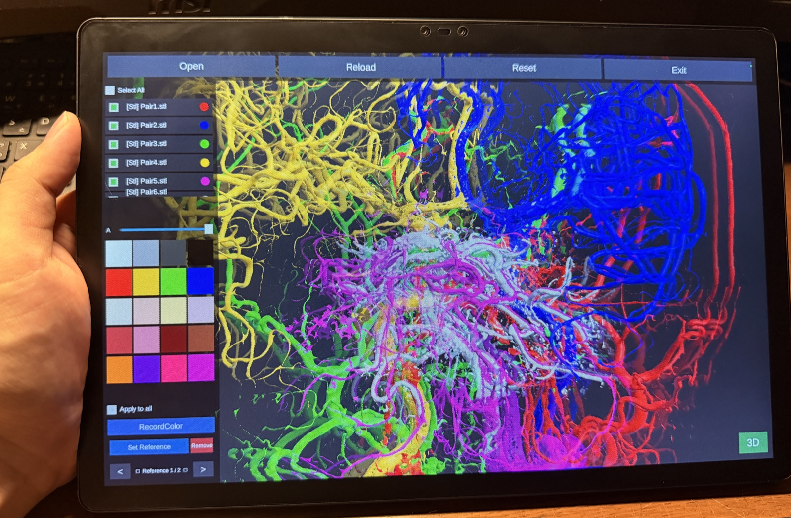
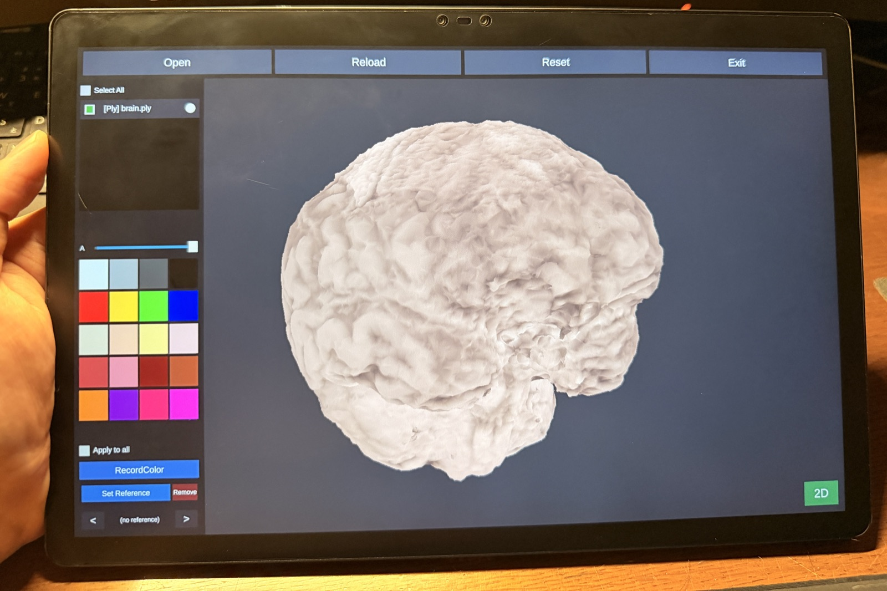

立体を、ありのままに、快適に。
SARTI-SRDは、Sony Spatial Reality Display 向けの
医療用3D可視化ソリューションです。
STL / OBJ / PLY / DICOM に対応し、術前計画から術中の解剖確認、
患者説明・教育・カンファレンスまで、
3Dモデルを扱うすべての診療科でご活用いただけます。
SARTI-SRD だからできる、6つの強み
STL / OBJ / PLY / DICOM の主要な3D・医療用フォーマットを直接読み込み。セグメンテーション済みモデルもDICOMボリュームも、同じワークフローで扱えます。
読み込めるオブジェクト数に制限なし。骨・血管・腫瘍・神経などを個別のレイヤーとして重ね合わせ、必要な構造だけを切り替えて観察できます。
各オブジェクトの色と透過度を自由に調整して保存。配色を一度決めれば、次回起動時もそのまま再現でき、症例ごとの可視化スタイルを資産化できます。
オブジェクト表面に直接、長さと角度を無制限に計測。立体把握しながらの実測で、術前のサイズ決定や治療計画を強力にサポートします。
「見る角度」を無制限に保存、ワンタップで再現。任意位置・角度の断面表示にも対応し、内部構造の確認と症例提示を一連の流れで行えます。
マウス＋キーボード / ゲームコントローラー / ハンドジェスチャー（Webカメラ） に対応。デスクでも術野脇でも、最適な操作スタイルを選択できます。
3Dモデルを用いるすべての診療科で
CT/MRIから抽出した3Dモデルを裸眼立体視で観察し、解剖の位置関係を正確に把握。骨切り・腫瘍切除・血管処理など、複雑な処置のシミュレーションを術前から立体的に検討できます。
2Dモニタでは理解しにくかった構造を、実物大に近い感覚で観察可能。診療科を問わず、3Dモデルを扱う術前検討に有効です。
患者本人の3Dモデルを目の前で立体的に提示し、病態・術式・予想される変化を直感的に共有。専門用語に頼らず、視覚的な理解を促せます。
複数視点の保存機能を使えば、説明用ビューをあらかじめ準備しておくことも可能。説明時間の短縮と納得度の向上に貢献します。
学生・研修医・コメディカルスタッフへの解剖教育に。複雑な構造を立体的に提示することで、教科書や2D画像だけでは伝わりにくい空間的位置関係を直感的に学習できます。
臓器ごとの表示切替・断面表示・計測機能と組み合わせれば、能動的に「触れて学ぶ」教材としても活用可能です。

複数のスタッフが囲んで立体像を同時共有。骨・血管・神経・腫瘍などを切り替えながら議論することで、手術アプローチや治療方針の検討がより具体的になります。
視野角の広い空間再現ディスプレイで、横から覗き込んでもしっかり立体に見える快適な共有体験を実現します。

術野脇に空間再現ディスプレイを設置し、術中にも患者固有の3Dモデルをリアルタイムに参照。複雑な解剖構造の確認や、術中の意思決定支援に活用できます。
非接触のハンドジェスチャー操作にも対応するため、清潔野を確保したまま術者自身が視点や表示を切り替え可能。チーム全体での状況把握をサポートします。
実際に SARTI-SRD で 3D モデルを表示している様子です。



※ 画面の立体感は2D写真では再現できません。実機 (Sony Spatial Reality Display) でのみ裸眼立体視としてご体験いただけます。
カンファレンス・教育に最適化された、持ち運べる裸眼立体3Dビューア。


裸眼立体視に対応した NubiaPad 3D（ZTE）向けに、SARTI-3DPad を併せて開発中。
SARTI-SRD と同じUI・同じ操作感をそのままに、タブレット端末で持ち運び可能。カンファレンスでの症例提示、回診時の患者説明、学生・研修医への教育など、デスクから離れた場面で立体3Dを活用できます。
対応ハードウェア (Sony Spatial Reality Display / NubiaPad 3D) は本ソフトウェアに含まれず、別途ご購入いただく必要があります。
| 対応OS | Windows 10/11 (64bit) |
| CPU | Intel Core i7-9700K 以上推奨 |
| メモリ | 16GB以上 |
| GPU | NVIDIA GeForce RTX 3060以上 |
| 対応ディスプレイ | Sony Spatial Reality Display (ELF-SR2) |
| ストレージ | SSD推奨、5GB以上の空き容量 |
| その他 | ジェスチャーコントロール使用時は別途Webカメラが必要 |
買い切りライセンスで長期的にご利用いただけます
ご購入前にご確認ください
表示価格はすべて税別です。本ソフトウェアのみのご提供となり、ご利用にあたっては対応ハードウェアを別途ご購入いただく必要があります。
Sony Spatial Reality Display (ELF-SR2) 向け
✨ ジェスチャーコントロールアプリ同梱
(¥20,000相当)
¥400,000(税別)
PC 1台につき1ライセンス
¥1,200,000(税別)
同一組織内で最大5台まで
NubiaPad 3D（ZTE）向け
※ 価格はすべて税別。対応ハードウェアは別途ご購入が必要です。
※ ご購入前に利用規約をご確認ください